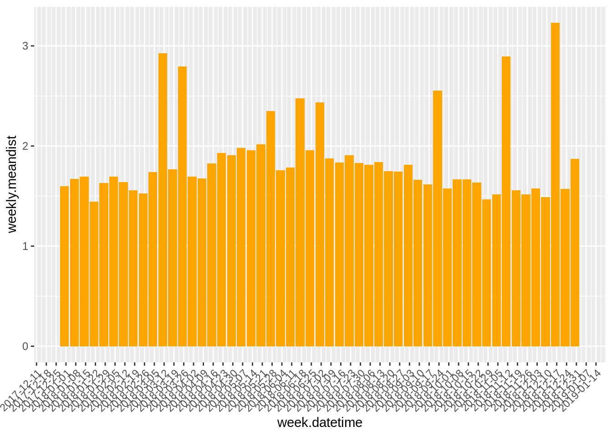

Working with time-series data can be a challenge for new and experienced R users. You will often have to format the date, time, and timezone when working with raw data. R does not automatically recognize date-time formats and there are many formats for representing date-time (e.g. yyyy-mm-dd, mm-dd-yy, mm/dd/yyyy hh:mm:ss).
lubridate is a handy package that is installed as part of the tidyverse installation but does not automatically load when you call for the tidyverse package (library(tidyverse)). You have to explicitly call the package when you need it.
Use one of the Biketown data files you downloaded the other day in the writing functions exercise. Or use source to use the function to get Biketown data for 06/2018 through 08/2018.
library(lubridate)##
## Attaching package: 'lubridate'## The following object is masked from 'package:base':
##
## datelibrary(dplyr)##
## Attaching package: 'dplyr'## The following objects are masked from 'package:lubridate':
##
## intersect, setdiff, union## The following objects are masked from 'package:stats':
##
## filter, lag## The following objects are masked from 'package:base':
##
## intersect, setdiff, setequal, unionlibrary(ggplot2)## Registered S3 methods overwritten by 'ggplot2':
## method from
## [.quosures rlang
## c.quosures rlang
## print.quosures rlangsource("/home/tammy/Documents/ds19-class/code/biketown-example.R")## Loading required package: pacman## Warning in library(package, lib.loc = lib.loc, character.only = TRUE,
## logical.return = TRUE, : there is no package called 'pacman'## Installing package into '/home/tammy/R/x86_64-pc-linux-gnu-library/3.6'
## (as 'lib' is unspecified)## also installing the dependency 'remotes'## Warning in dir.create("data/biketown"): 'data/biketown' already existsget_data(start = "06/2018", end = "08/2018")
# Function to read in all files and combine into one dataframe
# This function only works if you explicitly set the working drive to
# where the data is being stored
# Aftering running the function, make sure to set the working drive
# back to the folder where your .Rproj file is stored.
setwd("/home/tammy/Documents/ds19-class/data/biketown")
folder <- "/home/tammy/Documents/ds19-class/data/biketown"
filenames <- list.files(path = folder, pattern = "*.csv", all.files = FALSE, full.names = FALSE,
recursive = FALSE, ignore.case = FALSE)
read_csv_filename <- function(filenames){
ret <- read.csv(filenames, stringsAsFactors = F,
strip.white = T, na.strings = "")
ret$Source <- filenames
ret
}
bike_raw <- plyr::ldply(filenames, read_csv_filename)
setwd("/home/tammy/TREC/datascience2019/")# check data structure
str(bike_raw)## 'data.frame': 399955 obs. of 20 variables:
## $ RouteID : int 5444350 5444358 5444362 5444364 5444365 5444386 5444391 5444393 5444394 5444398 ...
## $ PaymentPlan : chr "Subscriber" "Subscriber" "Subscriber" "Subscriber" ...
## $ StartHub : chr "NE 11th at Holladay Park" "SW Park at Portland Art Museum" NA "NE Holladay at MLK" ...
## $ StartLatitude : num 45.5 45.5 45.5 45.5 45.5 ...
## $ StartLongitude : num -123 -123 -123 -123 -123 ...
## $ StartDate : chr "1/1/2018" "1/1/2018" "1/1/2018" "1/1/2018" ...
## $ StartTime : chr "0:00" "0:06" "0:10" "0:12" ...
## $ EndHub : chr NA "NW Glisan at 21st" "NW 2nd at Everett" NA ...
## $ EndLatitude : num 45.5 45.5 45.5 45.5 45.5 ...
## $ EndLongitude : num -123 -123 -123 -123 -123 ...
## $ EndDate : chr "1/1/2018" "1/1/2018" "1/1/2018" "1/1/2018" ...
## $ EndTime : chr "0:11" "0:16" "0:14" "0:24" ...
## $ TripType : chr NA NA NA NA ...
## $ BikeID : int 7135 6185 6403 6182 6622 6199 7333 6593 7327 6159 ...
## $ BikeName : chr "0303 BIKETOWN" "0537 BIKETOWN" "0830 BIKETOWN" "0317 BIKETOWN" ...
## $ Distance_Miles : num 0.85 1.26 0.5 1.77 1.15 1.08 0.78 0.77 0.91 0.99 ...
## $ Duration : chr "0:11:18" "0:09:33" "0:03:40" "0:12:13" ...
## $ RentalAccessPath: chr "keypad" "keypad" "keypad" "keypad" ...
## $ MultipleRental : logi FALSE FALSE FALSE FALSE FALSE FALSE ...
## $ Source : chr "2018_01.csv" "2018_01.csv" "2018_01.csv" "2018_01.csv" ...# create new columns `start.datetime` and `end.datetime`
bike_df1 <- bike_raw %>%
mutate(start.datetime = paste(StartDate, StartTime, sep = " "),
end.datetime = paste(EndDate, EndTime, sep = " "))
# convert `start.datetime` and `end.datetime` into date time format with appropriate timezone
bike_df1$start.datetime <- mdy_hm(bike_df1$start.datetime, tz = "America/Los_Angeles")
bike_df1$end.datetime <- mdy_hm(bike_df1$end.datetime, tz = "America/Los_Angeles")
# convert `Duration` into a useable format
bike_df1$Duration <- hms(bike_df1$Duration)## Warning in .parse_hms(..., order = "HMS", quiet = quiet): Some strings
## failed to parse, or all strings are NAs# this throws a warning about NA's
# checking for NAs in `bike_raw$Duration`
sum(is.na(bike_raw$Duration))## [1] 3946There are three functions in lubridate that seem synonomous but define very different actions:
# calculate interval
bike_df1$interval <- interval(bike_df1$start.datetime, bike_df1$end.datetime)
head(bike_df1$interval)## [1] 2018-01-01 00:00:00 PST--2018-01-01 00:11:00 PST
## [2] 2018-01-01 00:06:00 PST--2018-01-01 00:16:00 PST
## [3] 2018-01-01 00:10:00 PST--2018-01-01 00:14:00 PST
## [4] 2018-01-01 00:12:00 PST--2018-01-01 00:24:00 PST
## [5] 2018-01-01 00:12:00 PST--2018-01-01 00:19:00 PST
## [6] 2018-01-01 00:22:00 PST--2018-01-01 00:44:00 PST# calculate duration
bike_df1$duration.all <- as.duration(bike_df1$interval)
head(bike_df1$duration.all)## [1] "660s (~11 minutes)" "600s (~10 minutes)" "240s (~4 minutes)"
## [4] "720s (~12 minutes)" "420s (~7 minutes)" "1320s (~22 minutes)"# calculate period
bike_df1$period <- as.period(bike_df1$duration.all)
head(bike_df1$period)## [1] "11M 0S" "10M 0S" "4M 0S" "12M 0S" "7M 0S" "22M 0S"# using floor_date to help aggregate data
# want weekly mean distance traveled
bike_wkagg <- bike_df1 %>%
mutate(week.datetime = floor_date(start.datetime, unit = "week")) %>%
group_by(week.datetime) %>%
summarise(weekly.meandist = mean(Distance_Miles))
str(bike_wkagg)## Classes 'tbl_df', 'tbl' and 'data.frame': 53 obs. of 2 variables:
## $ week.datetime : POSIXct, format: "2017-12-31" "2018-01-07" ...
## $ weekly.meandist: num 1.6 1.67 1.69 1.45 1.63 ...bike_wkagg$week.datetime <- as.Date(bike_wkagg$week.datetime)
weekly_meandist_fig <- bike_wkagg %>%
ggplot(aes(x = week.datetime, y = weekly.meandist)) +
geom_bar(stat = "identity", fill = "orange") +
scale_x_date(date_breaks = "1 week") +
theme(axis.text.x = element_text(angle = 45, hjust = 1))
weekly_meandist_fig
There are a few important regular expression (Regex) base R functions that are handy to know when working with strings:
grep and grepl: grep looks for a match within a string vector and returns an indice of matches. grepl looks for a match within a string and returns a logical vector.sub and gsub: replaces the first exact matching chunk of text within a string vector with a specified replacement. gsub replaces all exact matching chunks of text with a specified replacement.# Create three different station categories for the start and end stations
bike_df2 <- bike_df1 %>%
mutate(start.station.category = if_else(grepl("Community", StartHub), "Community Station",
if_else(grepl("", StartHub), "Outside Station",
"BIKETOWN Station"))) %>%
mutate(end.station.category = if_else(grepl("Community", EndHub), "Community Station",
if_else(grepl("", EndHub), "Outside Station",
"BIKETOWN Station")))
table(bike_df2$start.station.category)##
## BIKETOWN Station Community Station Outside Station
## 138316 10957 250682table(bike_df2$end.station.category)##
## BIKETOWN Station Community Station Outside Station
## 109237 12427 278291Steve Fick’s Regular Expressions